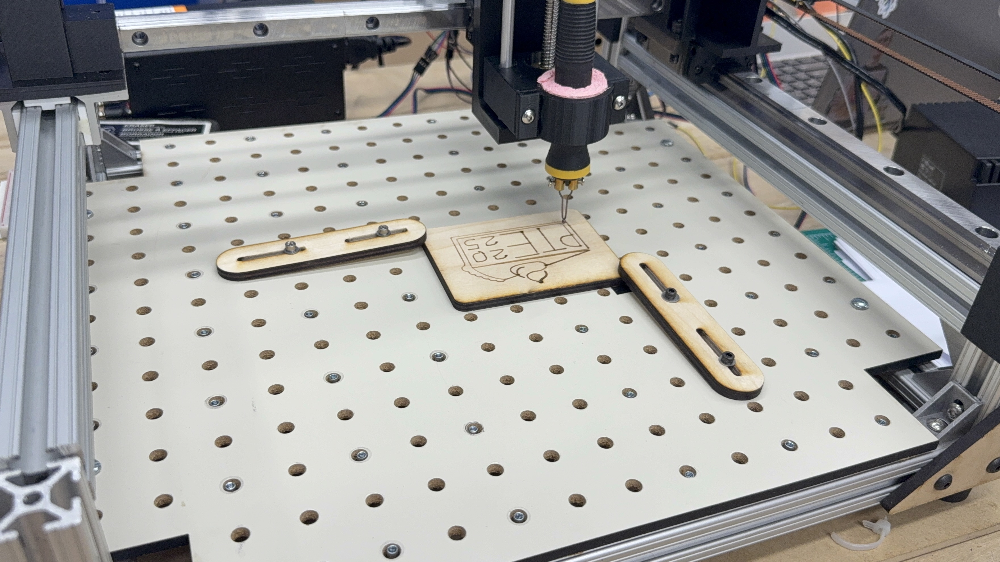
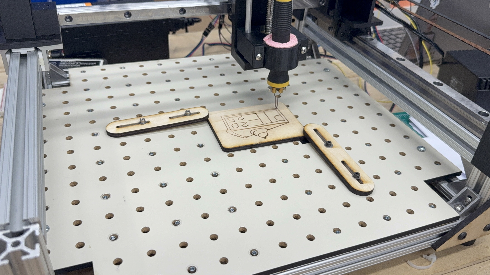
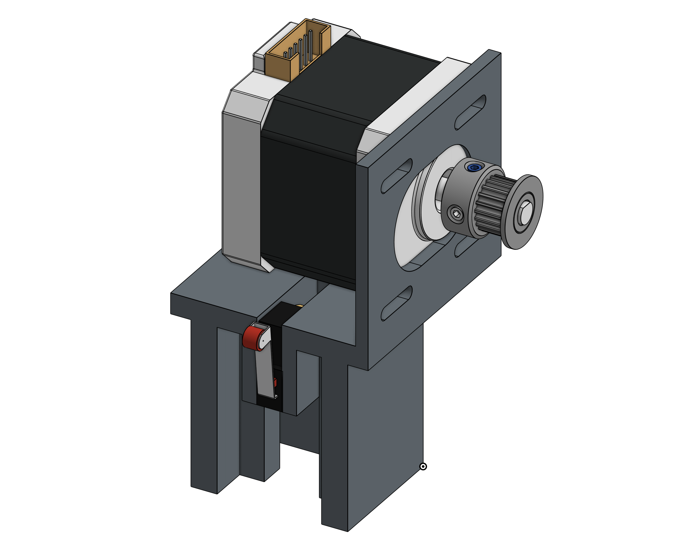
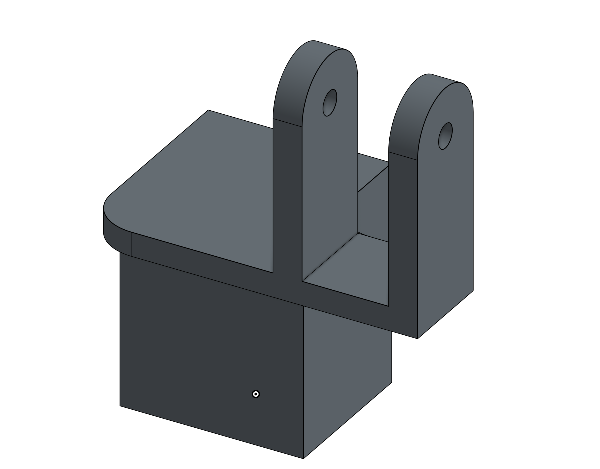
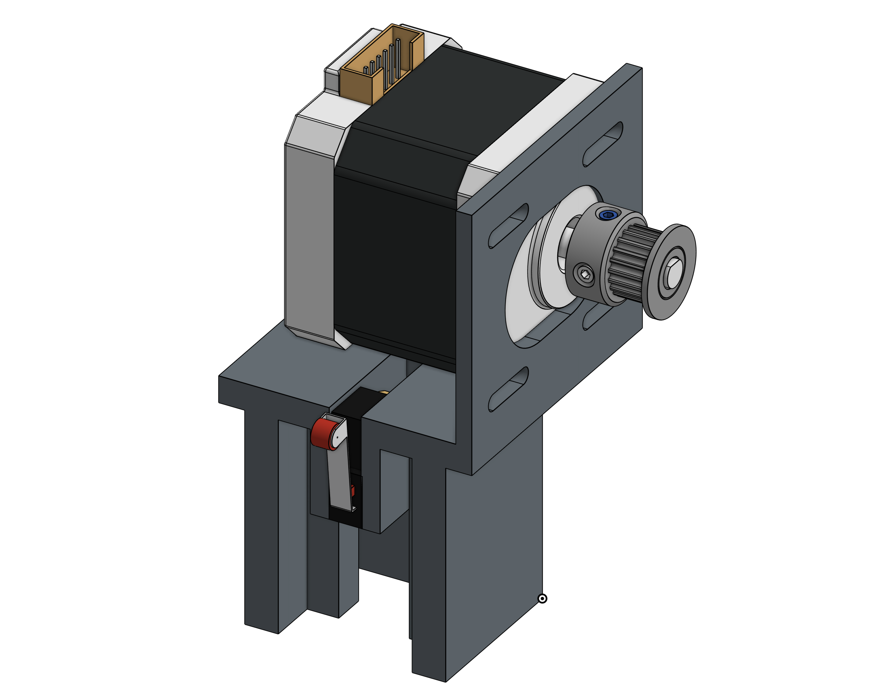
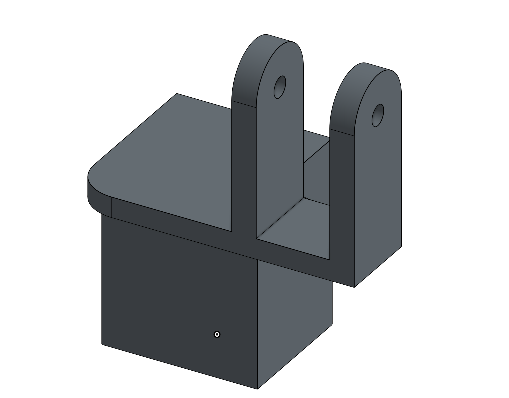
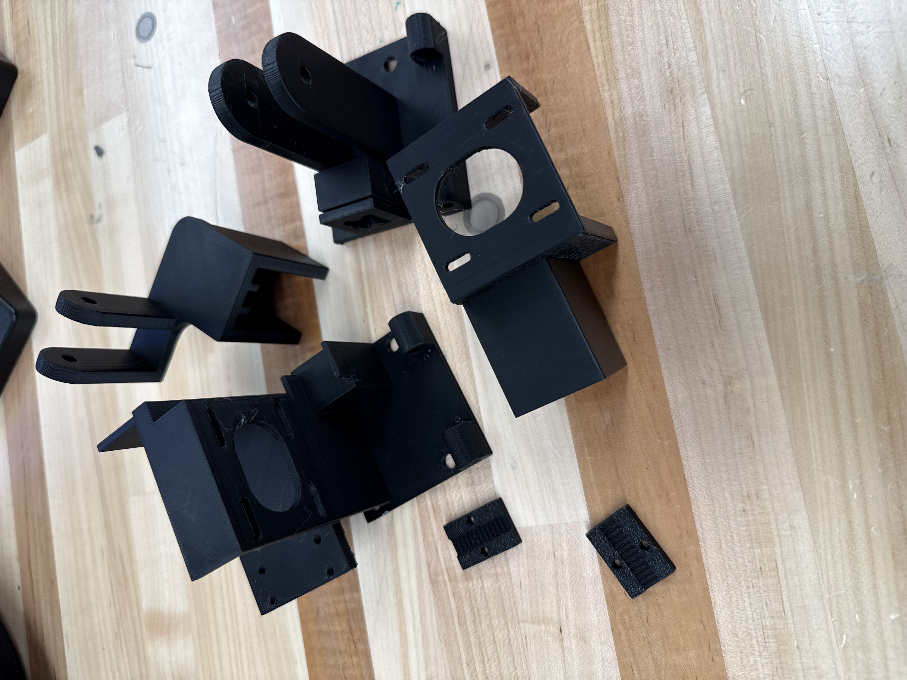
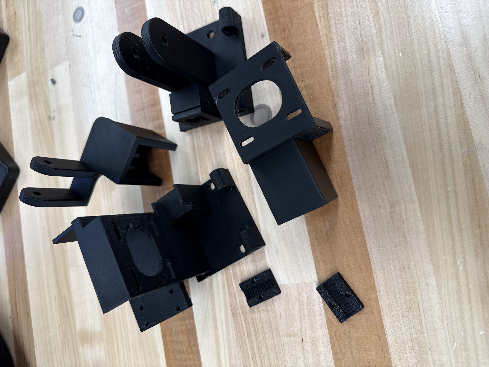

Design Concepts:
The Z-axis assembly moves the wood burner up and down and is the part that is connected to and moves on the x axis.
Design needs
First, we determined the design needs for the Z-axis mount. It had to attach to the linear slide on the x axis, clamp the ends of the pulley, hold the wood burning pen, and be able to move the pen up and down. We wanted the Z-axis mount to be small and lightweight so the other axes had less mass to move. When testing the woodburner, we found that the depth of the wood burning tip into the wood had a large impact on the line produced. We knew we needed precise control of the pen, and it had to be sturdy and easily adjustable. We determined a lead screw would be best for this.
Fundamental design
The fundamental design for the Z-axis mount is a woodburning pen clamped into a slider that rides on support rails and is moved by a lead screw. A motor is attached to the lead screw with a coupler. A mounting piece holds the rails and the motor in place. The back of the mount has holes to attach to the X-axis linear slide and a clamp for the belt.
Manufacturing
We considered using a mill to make the mount and slider so that the holes could be precisely positioned, reducing friction and instability. This would have been very time consuming and difficult to iterate on, so we looked at 3D printing instead. The rods and 3D prints would have some give to them and we designed the slide to be tall enough to not be able to rotate and jam on the rods, so it is not crucial to have exact precision. We decided to go with 3D printing the mount and slide.
Sizing
We debated a lot about the travel length of the Z-axis. We wanted a enough movement to allow for different thicknesses of wood to be used in the machine, but not make the assembly too tall and unstable. The shortest lead screw available was 100mm, which was close to the length of the axis we wanted, so we designed the mount around it.
Rod mounts
We were able to get free metal rods that were about 95mm and thought it would be easy to use them. The first problem we ran into was the coupler and motor shaft adding length at the top of the lead screw such that our rods couldn’t span the whole distance. Our first design had a large block that offset the motor and shaft collar to counter this.
We were not able to find bolts that exactly matched this size so we couldn’t attach the motor. It also would have been very difficult to get the bolts in with this configuration. We tried another design where the motor mount was thinner and there were parts extending out for the rods.
Ultimately, we decided this was not necessary and got longer rods that we could cut to length to match the motor mount.
Hole tolerancing
Another problem we ran into was tolerancing the holes for the rails. The mount needed to have a tight press fit to keep the rod in place and the slider needed to be just loose enough to slide easily without wobbling. We tried printing the pieces then drilling out the holes to exact size, but this melted them and made the holes worse. We printed a test piece with different holes to see which would be the best fit for each.
We somehow read test piece upside and backwards, and made the holes way too big on the next print. With a little more brainpower, we got a perfect fit.
If we had more time we would add something to secure the rods in place other than a press fit. The press fit was good at first, but wore out over time, allowing the slide to move the rod and fall out of place.
Slide and wood burner clamp
Our teaching team raised a concern about the tip of the wood burner getting caught when it hit different grains in the wood and recommended adding some compliance to it. We thought about using springs or elastics, but figured it would be difficult to make it stable enough. We decided to mount the pen in a sponge. Unfortunately, the two sponges we tried shrunk and hardened when they were dry. The sponge had to be clamped extra tightly, but it still came loose over time. If we had more time we would have tried different kinds of foam. The sponge also may not have been needed at all, because there was enough play in the rest of the machine.
3D printing
When designing the parts, we kept in mind how they would be 3D printed. We decided to print the mount on its side so the filament layers were strongest across the height of the piece and supported the top and bottom. We printed the slide flat so that the holes were as smooth and consistent as possible. The areas that needed precision could not be printed with supports.
Belt clamp
On the back of the Z-axis mount there is a small channel that the two ends of the belt rest in. Two other pieces have grooves in them that match the teeth of the belt. They are bolted to the mount, clamping the belt in place.
Limit Switch
We added a limit switch at the bottom of the axis to make zeroing to the lowest point easier and stop the tip of the wood burning pen from hitting something and breaking. At the end of the project, we learned that it would have been better to mount it to the top since the pen should not have to go all the way down to zero. While testing, there were a few times where the slide was raised too high and hit shaft coupler, binding it and getting stuck. We had to use pliers to get it loose. A limit switch on the top would help prevent this. Ironically, a previous design with the rod standoffs would have had a better hard stop that also prevented binding.


 



 





 
